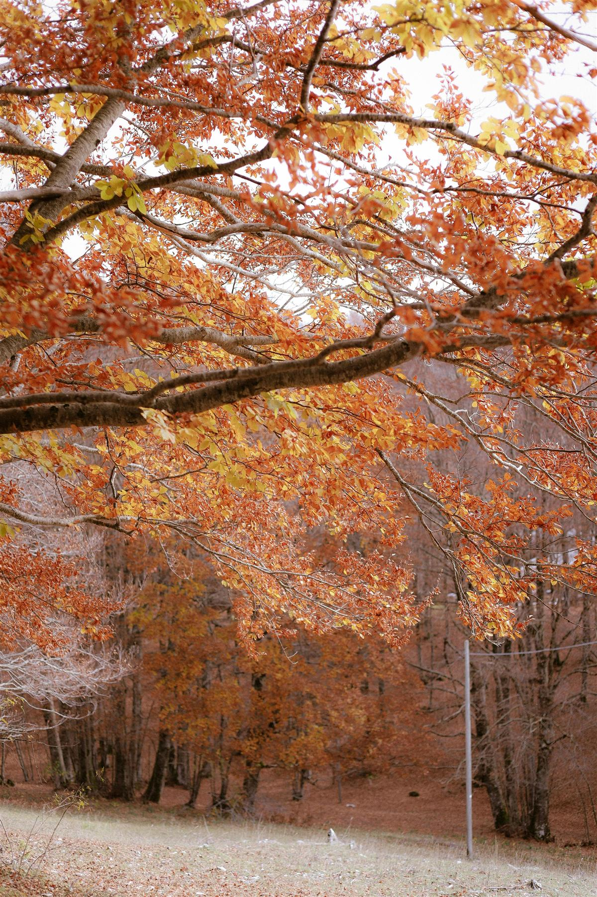

Descubra a Dança do Tempo
Explore as mudanças cíclicas que transformam nosso planeta a cada três meses, trazendo novas cores, temperaturas e vida.
Verão
A estação da luz intensa e dias intermináveis.

Outono
O momento da colheita e das folhas douradas.
Inverno
O silêncio do frio e a beleza da neve.
Primavera
O renascimento da natureza em cada flor.
Por que as estações existem?
Muitos acreditam que as estações mudam devido à distância da Terra em relação ao Sol. Este é um dos mitos mais comuns da astronomia!
O verdadeiro motivo é a inclinação de 23,5 graus do eixo terrestre, que faz com que diferentes hemisférios recebam luz solar com intensidades variadas ao longo do ano.
Luz Direta: No verão, os raios solares atingem a superfície de forma perpendicular, concentrando energia.
Luz Rasante: No inverno, a inclinação faz a luz se espalhar, perdendo intensidade calorífica.